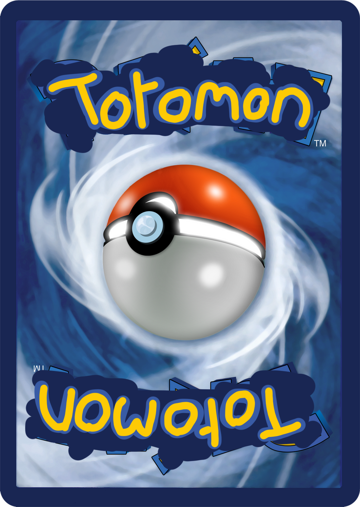
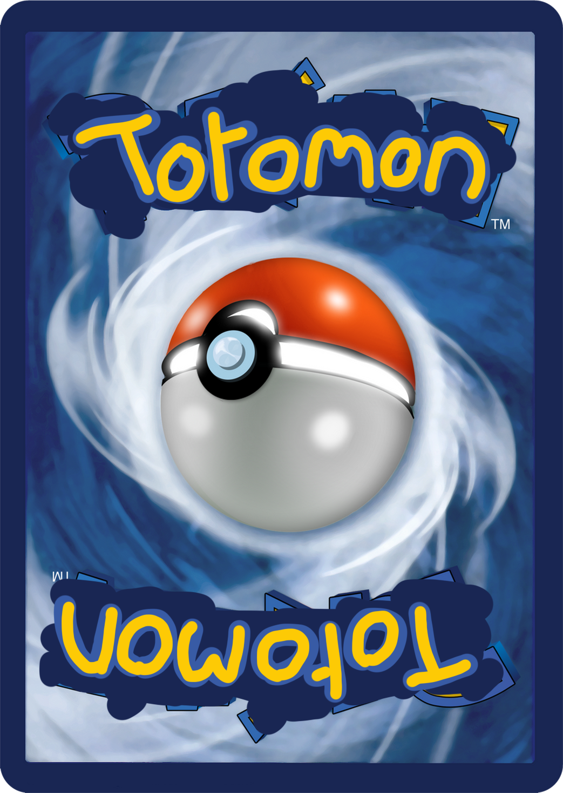

hmmm les cokies c'est très délicieuse est ce que tu en veux ? 🍪
Les cokies sont cuisinés avec soin et amour par mes soins. j'y ai porté beaucoup d'attentions. Mais au final quesque les cokies ? Eh bien selon wikipédia Le mot anglais « cokie » vient du néerlandais « koekje » (petit biscuit), introduit aux États-Unis par les colons hollandais de La Nouvelle-Amsterdam. C'est un terme utilisé en Amérique du Nord pour désigner toutes sortes de biscuits secs. Dans les autres pays anglophones on utilise le mot « biscuit ». Eh voila tu le savais pas ça avoue...
Mais la tu te demandes le rapport entre les biscuits et ce site internet incroyable créé par un pur wati beau gosse (si si je t'assures). Eh bien en informatique selon la cnil (commission nationale de l'informatique et des libertés) un cokie est un petit fichier stocké par un serveur dans le terminal (ordinateur, téléphone, etc.) d'un utilisateur et associé à un domaine web (c'est à dire dans la majorité des cas à l'ensemble des pages d'un même site web). Ce fichier est automatiquement renvoyé lors de contacts ultérieurs avec le même domaine.
Mais a quoi sert mes délicieux cokies ici ? Ils te permettent de povoir sauvegarder ta partie sur ton navigateur sans avoir à te soucier de la clé de sauvegarde ! C'est génial non ? Si et seulement si tu les acceptes tu devras cliquer sur sauvegarder et voila ! Si tu reviens plus tard ou que tu actualise ta page clique directement sur charger ou clique sur le champ de clé de sauvegarde et appuie sur entrée. Il y a encore du monde qui lit ça ? Serieusement ? Bon vu que je suis tout seul ici je peux dire ce que je veux non ? Bite. Les boutons ils sont douteux on dirait un vieux site pour telecharger des films. D'ailleurs telecharger un film piraté c'est du vol ! (cf la vidéo au début des dvd).
Cordialement, Toto
 
